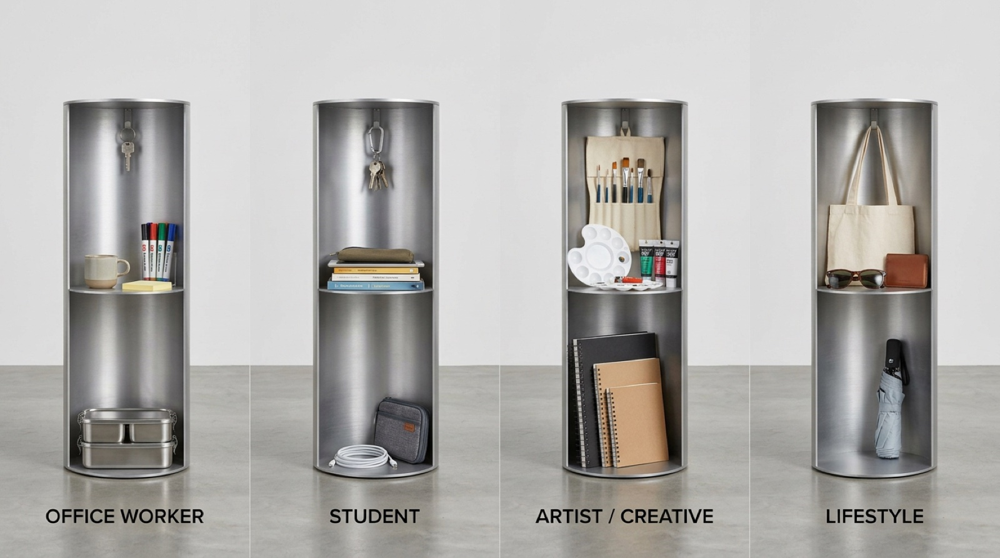
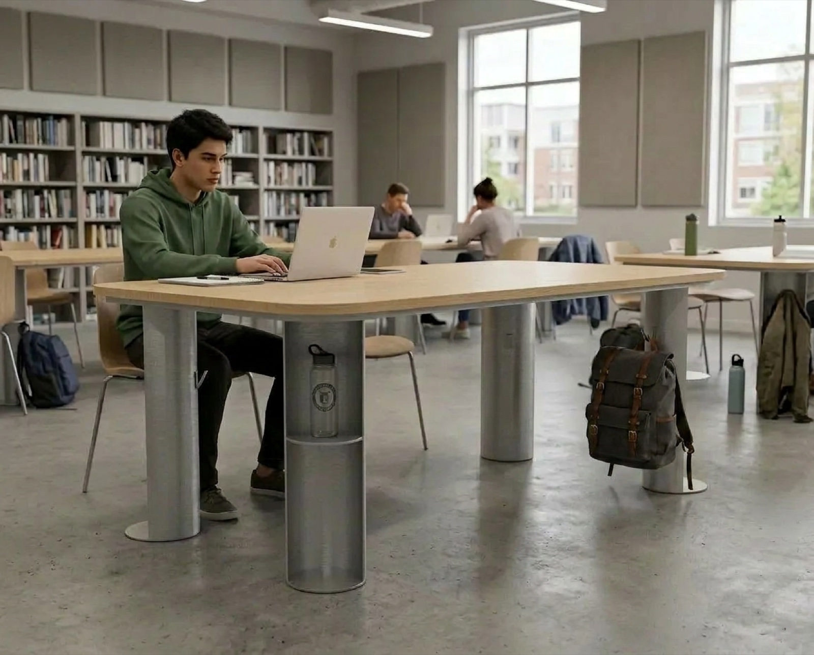
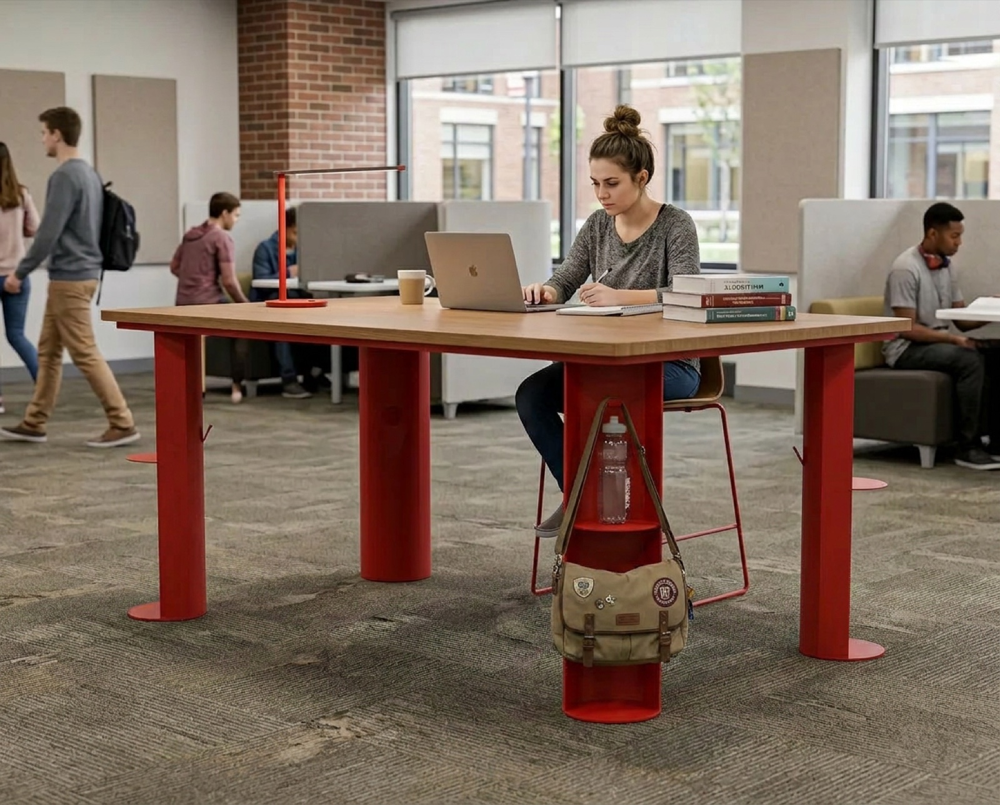
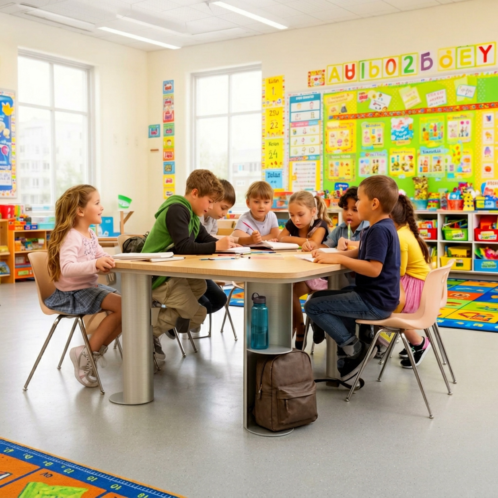
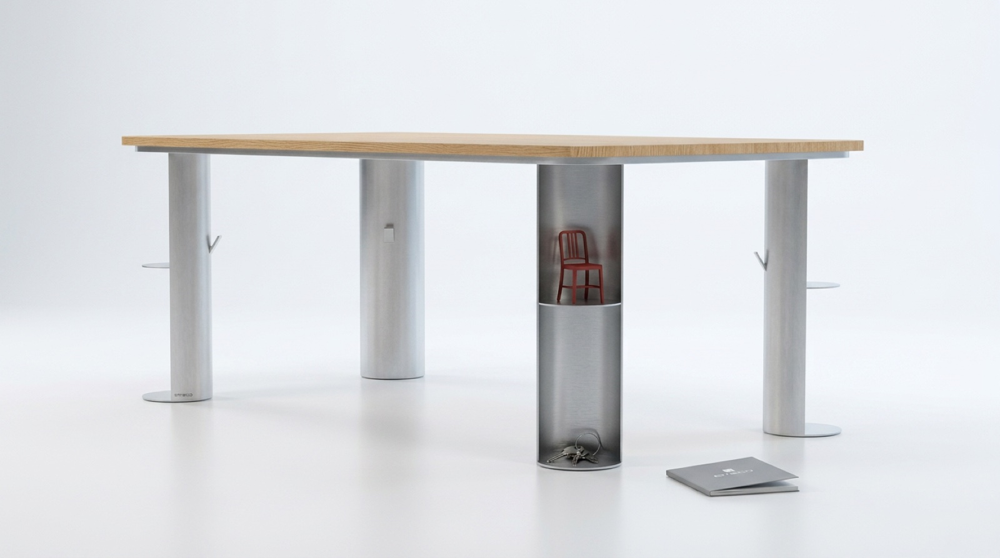
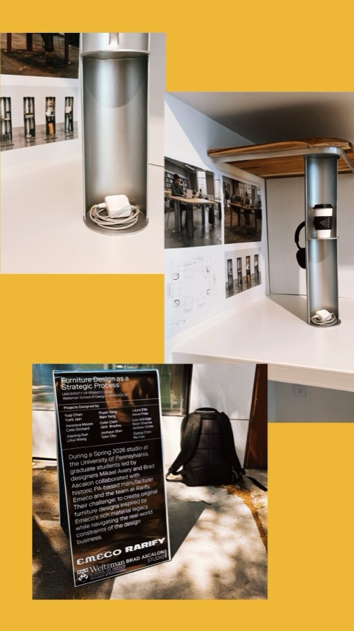

×
A shared table whose leg holds what you carry. Designed with a team of two in Spring 2026 for Furniture Design as a Strategic Process at the University of Pennsylvania’s Weitzman School of Design, a graduate studio led by Mikael Avery and Brad Ascalon with Emeco, the American manufacturer of the Navy Chair, and the Philadelphia design source Rarify.
Exhibited at Rarify’s Market Street showroom, Philadelphia, from 9 May to 31 July 2026, with the studio’s drawings, material samples and 1:1 models.
Scroll to take it apart. Drag the drawing to turn it.
The table
A wood top on an aluminium apron, on four aluminium columns. From across the room it is an ordinary table.
What it was missing
Everyone arrives at a shared table carrying something: a bag, a bottle, keys, a charger. A table gives you a surface and nothing else, so all of it ends up on the floor or on the chair beside you.
Taken apart
Lift the top and the apron away and four columns are left. Three are solid. One is open.
The leg is the brief
The open column is hollow: a hook at the top, a shelf halfway down, a well at the floor. What you carried goes inside it. Keys on the hook, the bottle and the charger on the shelf, the bag in the well.
Fitted to who sits there
The column is specified for the person at the table. A mug, markers and lunch tins for an office worker. Books, a pencil case and a cable for a student. Brushes, a palette and sketchbooks for an artist. A tote, sunglasses and an umbrella for everyone else.

Outside the column
The solid columns carry the rest: a hook for a bag, a ledge, a tab for keys and a foot plate at the floor. People already hang their bags off table legs. No table is built for it.
Where it goes
Drawn for a library, a studio and a classroom, and scaled down for children.




In the studio
Built at full size and exhibited at Rarify, Philadelphia, May to July 2026.

The exhibition at Rarify, on Penn Weitzman ↗ Emeco ↗ Rarify ↗ Brad Ascalon Studio ↗ Mikael Avery ↗